十大雅集 / 丹青造境
VII
丹青造境
传统美术
收录国家级代表性项目 139 项、417 子项，申报地区涉及 32 个省级行政区，另有中直单位申报的 4 子项。子项最多的地区：广东省（32）、江苏省（31）、浙江省（30）。
本馆《太守行纪》剧集
筹备中
传承人
筹备中
项目档案库
139 项、417 子项
第 1 / 3 页（VII-1 至 VII-60）
- VII-1
杨柳青木版年画
- 天津市2006 第一批 · 新增项目官方页 →
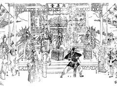
天津杨柳青木版年画墨线版 忠义堂图：未知Unknown author / Public domain / 维基共享资源。本站已缩放裁切。 - VII-2
武强木版年画
- 河北省武强县2006 第一批 · 新增项目官方页 →
- VII-3
桃花坞木版年画
- 江苏省苏州市2006 第一批 · 新增项目官方页 →
江苏苏州桃花坞木版年画 赵公明图：https://www.shanghaimuseum.net/mu/frontend/pg/article/id/CI00160586 / Public domain / 维基共享资源。本站已缩放裁切。 - VII-4
漳州木版年画
- 福建省漳州市2006 第一批 · 新增项目官方页 →
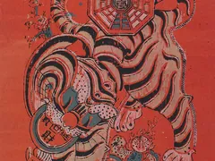
福建漳州木版年画 衔钱进宝图：https://www.shanghaimuseum.net/mu/frontend/pg/article/id/CI00010001 / Public domain / 维基共享资源。本站已缩放裁切。 - VII-5
杨家埠木版年画
- 山东省潍坊市2006 第一批 · 新增项目官方页 →
- VII-6
高密扑灰年画
- 山东省高密市2006 第一批 · 新增项目官方页 →
- VII-7
朱仙镇木版年画
- 河南省开封市2006 第一批 · 新增项目官方页 →
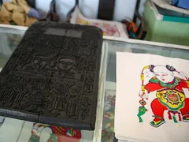
New year painting of Zhuxian Town图：Windmemories / CC BY-SA 4.0 / 维基共享资源。本站已缩放裁切，按 CC BY-SA 4.0 同样许可共享。 - VII-8
滩头木版年画
- 湖南省隆回县2006 第一批 · 新增项目官方页 →
- VII-9
佛山木版年画
- 广东省佛山市2006 第一批 · 新增项目官方页 →
- VII-10
梁平木版年画
- 重庆市梁平县2006 第一批 · 新增项目官方页 →
- VII-11
绵竹木版年画
- 四川省德阳市2006 第一批 · 新增项目官方页 →
- VII-12
凤翔木版年画
- 陕西省凤翔县2006 第一批 · 新增项目官方页 →
- VII-13
纳西族东巴画
- 云南省丽江市2006 第一批 · 新增项目官方页 →
- VII-14
藏族唐卡
- 藏族唐卡（噶玛嘎孜画派）四川省甘孜藏族自治州2006 第一批 · 新增项目官方页 →
- 藏族唐卡（勉唐画派）西藏自治区2006 第一批 · 新增项目官方页 →
- 藏族唐卡（钦泽画派）西藏自治区2006 第一批 · 新增项目官方页 →
- 藏族唐卡（昌都嘎玛嘎赤画派）西藏自治区昌都县2008 第二批 · 扩展项目官方页 →
- 藏族唐卡（墨竹工卡直孔刺绣唐卡）西藏自治区墨竹工卡县2008 第二批 · 扩展项目官方页 →
- 藏族唐卡（甘南藏族唐卡）甘肃省夏河县2008 第二批 · 扩展项目官方页 →
- 藏族唐卡（勉萨画派）西藏自治区2011 第三批 · 扩展项目官方页 →
- 藏族唐卡（郎卡杰唐卡）四川省甘孜藏族自治州2021 第五批 · 扩展项目官方页 →
- 藏族唐卡（齐吾岗派）西藏自治区2021 第五批 · 扩展项目官方页 →
- 藏族唐卡（拉萨堆绣唐卡）西藏自治区拉萨市2021 第五批 · 扩展项目官方页 →
- 藏族唐卡（康勉萨唐卡）西藏自治区昌都市2021 第五批 · 扩展项目官方页 →
- 藏族唐卡（天祝唐卡）甘肃省武威市天祝藏族自治县2021 第五批 · 扩展项目官方页 →
- 藏族唐卡（化隆唐卡）青海省海东市化隆县2021 第五批 · 扩展项目官方页 →
- 藏族唐卡（班玛马尾钉线绣唐卡）青海省果洛藏族自治州班玛县2021 第五批 · 扩展项目官方页 →
- 藏族唐卡（藏娘唐卡）青海省玉树藏族自治州2021 第五批 · 扩展项目官方页 →
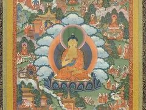
唐卡，大都会艺术博物馆藏图：大都会艺术博物馆（The Metropolitan Museum of Art） / Public Domain (Open Access, CC0) / 大都会艺术博物馆。本站已缩放裁切。 - VII-15
- VII-16
剪纸
- 剪纸（蔚县剪纸）河北省蔚县2006 第一批 · 新增项目官方页 →
- 剪纸（丰宁满族剪纸）河北省丰宁满族自治县2006 第一批 · 新增项目官方页 →
- 剪纸（中阳剪纸）山西省中阳县2006 第一批 · 新增项目官方页 →
- 剪纸（医巫闾山满族剪纸）辽宁省锦州市2006 第一批 · 新增项目官方页 →
- 剪纸（扬州剪纸）江苏省扬州市2006 第一批 · 新增项目官方页 →
- 剪纸（乐清细纹刻纸）浙江省乐清市2006 第一批 · 新增项目官方页 →
- 剪纸（广东剪纸）广东省佛山市2006 第一批 · 新增项目官方页 →
- 剪纸（广东剪纸）广东省汕头市2006 第一批 · 新增项目官方页 →
- 剪纸（广东剪纸）广东省潮州市2006 第一批 · 新增项目官方页 →
- 剪纸（傣族剪纸）云南省潞西市2006 第一批 · 新增项目官方页 →
- 剪纸（安塞剪纸）陕西省安塞县2006 第一批 · 新增项目官方页 →
- 剪纸（广灵染色剪纸）山西省广灵县2008 第二批 · 扩展项目官方页 →
- 剪纸（和林格尔剪纸）内蒙古自治区和林格尔县2008 第二批 · 扩展项目官方页 →
- 剪纸（庄河剪纸）辽宁省庄河市2008 第二批 · 扩展项目官方页 →
- 剪纸（岫岩满族剪纸）辽宁省岫岩满族自治县2008 第二批 · 扩展项目官方页 →
- 剪纸（建平剪纸）辽宁省建平县2008 第二批 · 扩展项目官方页 →
- 剪纸（新宾满族剪纸）辽宁省新宾满族自治县2008 第二批 · 扩展项目官方页 →
- 剪纸（长白山满族剪纸）吉林省通化市2008 第二批 · 扩展项目官方页 →
- 剪纸（方正剪纸）黑龙江省方正县2008 第二批 · 扩展项目官方页 →
- 剪纸（上海剪纸）上海市徐汇区2008 第二批 · 扩展项目官方页 →
- 剪纸（南京剪纸）江苏省南京市2008 第二批 · 扩展项目官方页 →
- 剪纸（徐州剪纸）江苏省徐州市2008 第二批 · 扩展项目官方页 →
- 剪纸（金坛刻纸）江苏省金坛市2008 第二批 · 扩展项目官方页 →
- 剪纸（浦江剪纸）浙江省浦江县2008 第二批 · 扩展项目官方页 →
- 剪纸（阜阳剪纸）安徽省阜阳市2008 第二批 · 扩展项目官方页 →
- 剪纸（漳浦剪纸）福建省漳浦县2008 第二批 · 扩展项目官方页 →
- 剪纸（泉州（李尧宝）刻纸）福建省泉州市2008 第二批 · 扩展项目官方页 →
- 剪纸（柘荣剪纸）福建省柘荣县2008 第二批 · 扩展项目官方页 →
- 剪纸（瑞昌剪纸）江西省瑞昌市2008 第二批 · 扩展项目官方页 →
- 剪纸（莒县过门笺）山东省莒县2008 第二批 · 扩展项目官方页 →
- 剪纸（滨州民间剪纸）山东省滨州市2008 第二批 · 扩展项目官方页 →
- 剪纸（高密剪纸）山东省高密市2008 第二批 · 扩展项目官方页 →
- 剪纸（烟台剪纸）山东省烟台市2008 第二批 · 扩展项目官方页 →
- 剪纸（灵宝剪纸）河南省灵宝市2008 第二批 · 扩展项目官方页 →
- 剪纸（卢氏剪纸）河南省卢氏县2008 第二批 · 扩展项目官方页 →
- 剪纸（辉县剪纸）河南省辉县市2008 第二批 · 扩展项目官方页 →
- 剪纸（孝感雕花剪纸）湖北省孝感市孝南区2008 第二批 · 扩展项目官方页 →
- 剪纸（鄂州雕花剪纸）湖北省鄂州市2008 第二批 · 扩展项目官方页 →
- 剪纸（仙桃雕花剪纸）湖北省仙桃市2008 第二批 · 扩展项目官方页 →
- 剪纸（踏虎凿花）湖南省泸溪县2008 第二批 · 扩展项目官方页 →
- 剪纸（苗族剪纸）贵州省剑河县2008 第二批 · 扩展项目官方页 →
- 剪纸（庆阳剪纸）甘肃省镇原县2008 第二批 · 扩展项目官方页 →
- 剪纸（包头剪纸）内蒙古自治区包头市2011 第三批 · 扩展项目官方页 →
- 剪纸（新干剪纸）江西省新干县2011 第三批 · 扩展项目官方页 →
- 剪纸（延川剪纸）陕西省延川县2011 第三批 · 扩展项目官方页 →
- 剪纸（旬邑彩贴剪纸）陕西省旬邑县2011 第三批 · 扩展项目官方页 →
- 剪纸（会宁剪纸）甘肃省会宁县2011 第三批 · 扩展项目官方页 →
- 剪纸（静乐剪纸）山西省静乐县2014 第四批 · 扩展项目官方页 →
- 剪纸（桐庐剪纸）浙江省桐庐县2014 第四批 · 扩展项目官方页 →
- 剪纸（浦城剪纸）福建省浦城县2014 第四批 · 扩展项目官方页 →
- 剪纸（水族剪纸）贵州省黔南布依族苗族自治州2014 第四批 · 扩展项目官方页 →
- 剪纸（定西剪纸）甘肃省定西市2014 第四批 · 扩展项目官方页 →
- 剪纸（回族剪纸）宁夏回族自治区2014 第四批 · 扩展项目官方页 →
- 剪纸（太原剪纸）山西省太原市2021 第五批 · 扩展项目官方页 →
- 剪纸（海伦剪纸）黑龙江省绥化市海伦市2021 第五批 · 扩展项目官方页 →
- 剪纸（梅山剪纸）湖南省益阳市安化县2021 第五批 · 扩展项目官方页 →
Paper cut of Pig for celebrating Pig Year New Year (2007, 2019)图：Made by Fanghong / CC BY 2.5 / 维基共享资源。本站已缩放裁切。 - VII-17
顾绣
- 上海市松江区2006 第一批 · 新增项目官方页 →
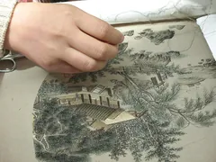
Gu Embroidery, which began with a Gu family in Suzhou, women recreate tradtional Chinese…图：Gary Soup / CC BY 2.0 / 维基共享资源。本站已缩放裁切。 - VII-18
苏绣
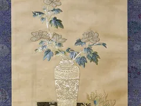
博古画图：https://www.shanghaimuseum.net/mu/frontend/pg/article/id/CI00004995 / Public domain / 维基共享资源。本站已缩放裁切。 - VII-19
湘绣
- 湖南省长沙市2006 第一批 · 新增项目官方页 →
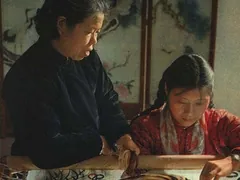
1963-07 1963年 湘绣制作图：《人民画报》 / Public domain / 维基共享资源。本站已缩放裁切。 - VII-20
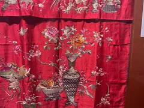
南海博物馆广绣图：章彦博 / CC BY-SA 4.0 / 维基共享资源。本站已缩放裁切，按 CC BY-SA 4.0 同样许可共享。 - VII-21
- VII-22
- VII-23
水族马尾绣
- 贵州省三都水族自治县2006 第一批 · 新增项目官方页 →
- VII-24
土族盘绣
- 青海省互助土族自治县2006 第一批 · 新增项目官方页 →
- VII-25
- VII-26
- VII-27
- VII-28
扬州玉雕
- 江苏省扬州市2006 第一批 · 新增项目官方页 →
- VII-29
岫岩玉雕
- 辽宁省岫岩满族自治县2006 第一批 · 新增项目官方页 →
- VII-30
阜新玛瑙雕
- 辽宁省阜新市2006 第一批 · 新增项目官方页 →
- VII-31
夜光杯雕
- 甘肃省酒泉市2006 第一批 · 新增项目官方页 →
- VII-32
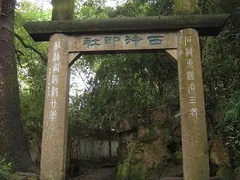
西泠印社建社廿週年紀念社門，建於1923年。兩側題字為“石藏東漢名三老，社結西泠紀廿年。”图：Inhorw / CC BY-SA 4.0 / 维基共享资源。本站已缩放裁切，按 CC BY-SA 4.0 同样许可共享。 - VII-33
青田石雕
- 浙江省青田县2006 第一批 · 新增项目官方页 →
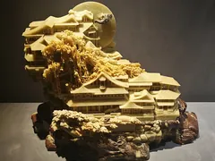
Qingtian stone carving "Sharing the Bright Moon at Home" --- Work by Xia Furen, 2006图：Zicheng zic / CC BY 4.0 / 维基共享资源。本站已缩放裁切。 - VII-34
曲阳石雕
- 河北省曲阳县2006 第一批 · 新增项目官方页 →
- VII-35
寿山石雕
- 福建省福州市2006 第一批 · 新增项目官方页 →
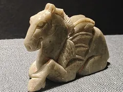
元代寿山石雕双翼飞马（福州市博物馆文物），考虑到中国飞马类文物的形象传统可追溯至西域的希腊-巴克特里亚政权，再考虑到该文物的创作年代（蒙元）、创作特征与创作地点（当时海上丝绸之…图：向史公哲曰 / CC BY-SA 4.0 / 维基共享资源。本站已缩放裁切，按 CC BY-SA 4.0 同样许可共享。 - VII-36
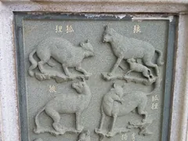
鳌园的惠安石雕05-一群犬科动物图：向史公哲曰 / CC BY-SA 4.0 / 维基共享资源。本站已缩放裁切，按 CC BY-SA 4.0 同样许可共享。 - VII-37
- VII-38
- VII-39
藏族格萨尔彩绘石刻
- 四川省色达县2006 第一批 · 新增项目官方页 →
- VII-40
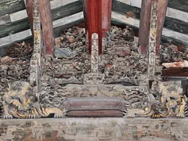
洪阳的潮州木雕图：Polar1 / CC BY 3.0 / 维基共享资源。本站已缩放裁切。 - VII-41
宁波朱金漆木雕
- 浙江省宁波市2006 第一批 · 新增项目官方页 →
- VII-42
- VII-43
东阳木雕
- 浙江省东阳市2006 第一批 · 新增项目官方页 →
- VII-44
- VII-45
萍乡湘东傩面具
- 江西省萍乡市2006 第一批 · 新增项目官方页 →
- VII-46
竹刻
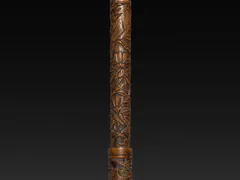
明竹刻，克利夫兰艺术博物馆藏图：克利夫兰艺术博物馆（The Cleveland Museum of Art） / CC0 1.0 / 克利夫兰艺术博物馆。本站已缩放裁切。 - VII-47
泥塑
- 泥塑（天津泥人张）天津市2006 第一批 · 新增项目官方页 →
- 泥塑（惠山泥人）江苏省无锡市2006 第一批 · 新增项目官方页 →
- 泥塑（浚县泥咕咕）河南省浚县2006 第一批 · 新增项目官方页 →
- 泥塑（凤翔泥塑）陕西省凤翔县2006 第一批 · 新增项目官方页 →
- 泥塑（玉田泥塑）河北省玉田县2008 第二批 · 扩展项目官方页 →
- 泥塑（苏州泥塑）江苏省苏州市2008 第二批 · 扩展项目官方页 →
- 泥塑（聂家庄泥塑）山东省高密市2008 第二批 · 扩展项目官方页 →
- 泥塑（大吴泥塑）广东省潮安县2008 第二批 · 扩展项目官方页 →
- 泥塑（徐氏泥彩塑）四川省大英县2008 第二批 · 扩展项目官方页 →
- 泥塑（苗族泥哨）贵州省黄平县2008 第二批 · 扩展项目官方页 →
- 泥塑（杨氏家庭泥塑）宁夏回族自治区隆德县2008 第二批 · 扩展项目官方页 →
- 泥塑（惠民泥塑）山东省惠民县2011 第三批 · 扩展项目官方页 →
- 泥塑（北京兔儿爷）北京市朝阳区2014 第四批 · 扩展项目官方页 →
- 泥塑（淮阳泥泥狗）河南省淮阳县2014 第四批 · 扩展项目官方页 →
- 泥塑（北京泥人张）北京市东城区2021 第五批 · 扩展项目官方页 →
- VII-48
- VII-49
热贡艺术
- 青海省同仁县2006 第一批 · 新增项目官方页 →
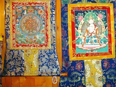
Thangkas (tibetan paintings on silk) painted by local monks in the Wutun Si monastery ne…图：Mario Biondi (writer) / CC BY-SA 2.5 / 维基共享资源。本站已缩放裁切，按 CC BY-SA 2.5 同样许可共享。 - VII-50
灯彩
- 灯彩（仙居花灯）浙江省仙居县2006 第一批 · 新增项目官方页 →
- 灯彩（硖石灯彩）浙江省海宁市2006 第一批 · 新增项目官方页 →
- 灯彩（泉州花灯）福建省泉州市2006 第一批 · 新增项目官方页 →
- 灯彩（东莞千角灯）广东省东莞市2006 第一批 · 新增项目官方页 →
- 灯彩（湟源排灯）青海省湟源县2006 第一批 · 新增项目官方页 →
- 灯彩（北京灯彩）北京市崇文区2008 第二批 · 扩展项目官方页 →
- 灯彩（北京灯彩）北京市朝阳区2008 第二批 · 扩展项目官方页 →
- 灯彩（上海灯彩）上海市卢湾区2008 第二批 · 扩展项目官方页 →
- 灯彩（秦淮灯彩）江苏省句容市2008 第二批 · 扩展项目官方页 →
- 灯彩（苏州灯彩）江苏省苏州市2008 第二批 · 扩展项目官方页 →
- 灯彩（佛山彩灯）广东省佛山市2008 第二批 · 扩展项目官方页 →
- 灯彩（潮州花灯）广东省潮州市湘桥区2008 第二批 · 扩展项目官方页 →
- 灯彩（洛阳宫灯）河南省洛阳市2008 第二批 · 扩展项目官方页 →
- 灯彩（汴京灯笼张）河南省开封市2008 第二批 · 扩展项目官方页 →
- 灯彩（忠信花灯）广东省连平县2011 第三批 · 扩展项目官方页 →
- 灯彩（乐清首饰龙）浙江省乐清市2014 第四批 · 扩展项目官方页 →
海宁硖石彩灯之龙舟灯，长250cm，宽高均150cm图：猫猫的日记本 / CC BY-SA 4.0 / 维基共享资源。本站已缩放裁切，按 CC BY-SA 4.0 同样许可共享。 - VII-51
竹编
- 嵊州竹编浙江省嵊州市2006 第一批 · 新增项目官方页 →
- 竹编（东阳竹编）浙江省东阳市2008 第二批 · 扩展项目官方页 →
- 竹编（舒席）安徽省舒城县2008 第二批 · 扩展项目官方页 →
- 竹编（瑞昌竹编）江西省瑞昌市2008 第二批 · 扩展项目官方页 →
- 竹编（梁平竹帘）重庆市梁平县2008 第二批 · 扩展项目官方页 →
- 竹编（渠县刘氏竹编）四川省渠县2008 第二批 · 扩展项目官方页 →
- 竹编（青神竹编）四川省青神县2008 第二批 · 扩展项目官方页 →
- 竹编（瓷胎竹编）四川省邛崃市2008 第二批 · 扩展项目官方页 →
- 竹编（益阳小郁竹艺）湖南省益阳市2011 第三批 · 扩展项目官方页 →
- 竹编（毛南族花竹帽编织技艺）广西壮族自治区环江毛南族自治县2011 第三批 · 扩展项目官方页 →
- 竹编（安溪竹藤编）福建省安溪县2014 第四批 · 扩展项目官方页 →
- 竹编（道明竹编）四川省崇州市2014 第四批 · 扩展项目官方页 →
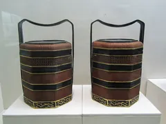
嵊州竹编绍兴八角三格提篮，20世纪50年代图：猫猫的日记本 / CC BY-SA 4.0 / 维基共享资源。本站已缩放裁切，按 CC BY-SA 4.0 同样许可共享。 - VII-52
- VII-53
- VII-54
- VII-55
柳编
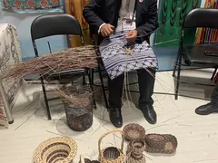
刚开始进行枝条编织的维吾尔手艺人 摄于对口援疆19省市非物质文化遗产展图：HaziiDozen / CC BY-SA 4.0 / 维基共享资源。本站已缩放裁切，按 CC BY-SA 4.0 同样许可共享。 - VII-56
石雕
- 石雕（煤精雕刻）辽宁省抚顺市2008 第二批 · 新增项目官方页 →
- 石雕（鸡血石雕）浙江省临安市2008 第二批 · 新增项目官方页 →
- 石雕（嘉祥石雕）山东省嘉祥县2008 第二批 · 新增项目官方页 →
- 石雕（掖县滑石雕刻）山东省莱州市2008 第二批 · 新增项目官方页 →
- 石雕（方城石猴）河南省方城县2008 第二批 · 新增项目官方页 →
- 石雕（大冶石雕）湖北省大冶市2008 第二批 · 新增项目官方页 →
- 石雕（菊花石雕）湖南省浏阳市2008 第二批 · 新增项目官方页 →
- 石雕（雷州石狗）广东省雷州市2008 第二批 · 新增项目官方页 →
- 石雕（白花石刻）四川省广元市2008 第二批 · 新增项目官方页 →
- 石雕（安岳石刻）四川省安岳县2008 第二批 · 新增项目官方页 →
- 石雕（泽库和日寺石刻）青海省泽库县2008 第二批 · 新增项目官方页 →
- 石雕（菊花石雕）湖南省工艺美术研究所2011 第三批 · 扩展项目官方页 →
- 石雕（沅洲石雕）湖南省芷江侗族自治县2014 第四批 · 扩展项目官方页 →
- 石雕（富平石刻）陕西省富平县2014 第四批 · 扩展项目官方页 →
- 石雕（绥德石雕）陕西省绥德县2014 第四批 · 扩展项目官方页 →
- 石雕（巴林石雕）内蒙古自治区赤峰市2021 第五批 · 扩展项目官方页 →
- 石雕（绿松石雕）湖北省2021 第五批 · 扩展项目官方页 →
- 石雕（大足石雕）重庆市大足区2021 第五批 · 扩展项目官方页 →
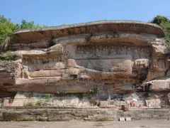
Wofoyuan (Sakyamuni Nirvana) Cliff Sculpture of Anyue, Sichuan图：Nekitarc / CC BY-SA 4.0 / 维基共享资源。本站已缩放裁切，按 CC BY-SA 4.0 同样许可共享。 - VII-57
玉雕
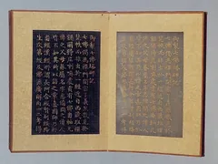
清玉雕，大都会艺术博物馆藏图：大都会艺术博物馆（The Metropolitan Museum of Art） / Public Domain (Open Access, CC0) / 大都会艺术博物馆。本站已缩放裁切。 - VII-58
木雕
- 木雕（曲阜楷木雕刻）山东省曲阜市2008 第二批 · 新增项目官方页 →
- 木雕（澳门神像雕刻）澳门特别行政区2008 第二批 · 新增项目官方页 →
- 木雕（武汉木雕船模）湖北省武汉市硚口区2008 第二批 · 新增项目官方页 →
- 木雕（紫檀雕刻）中国紫檀博物馆2011 第三批 · 扩展项目官方页 →
- 木雕（紫檀雕刻）上海市2011 第三批 · 扩展项目官方页 →
- 木雕（莆田木雕）福建省莆田市2011 第三批 · 扩展项目官方页 →
- 木雕（花瑰艺术）海南省澄迈县2011 第三批 · 扩展项目官方页 →
- 木雕（剑川木雕）云南省剑川县2011 第三批 · 扩展项目官方页 →
- 木雕（永乐桃木雕刻）山西省芮城县2014 第四批 · 扩展项目官方页 →
- 木雕（东固传统造像）江西省吉安市青原区2014 第四批 · 扩展项目官方页 →
- 木雕（通山木雕）湖北省通山县2014 第四批 · 扩展项目官方页 →
- 木雕（泉州木雕）福建省泉州市2021 第五批 · 扩展项目官方页 →
- 木雕（曹县木雕）山东省菏泽市曹县2021 第五批 · 扩展项目官方页 →
- 木雕（奉节木雕）重庆市奉节县2021 第五批 · 扩展项目官方页 →
- 木雕（藏族扎囊木雕）西藏自治区山南市2021 第五批 · 扩展项目官方页 →
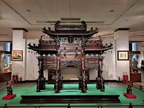
紫檀雕龙泉寺牌坊图：E2568 / CC0 / 维基共享资源。本站已缩放裁切。 - VII-59
核雕
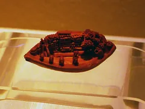
橄榄核雕，跳山羊，当代，杭州工艺美术博物馆藏图：三猎 / CC BY-SA 4.0 / 维基共享资源。本站已缩放裁切，按 CC BY-SA 4.0 同样许可共享。 - VII-60
椰雕
- 椰雕（海南椰雕）海南省海口市2008 第二批 · 新增项目官方页 →
名录数据来源：中国非物质文化遗产网